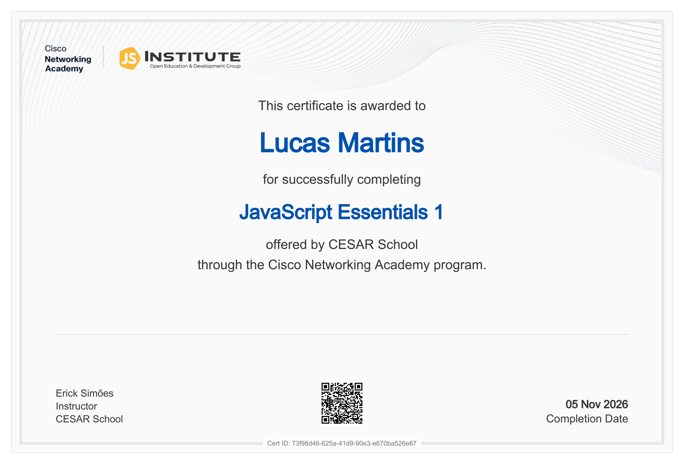

Completed Courses
JavaScript Essentials 1
Institution: CESAR School / Cisco Networking Academy
Completion date: November 5, 2026
Completed a course focused on JavaScript fundamentals, programming concepts and problem-solving.

I believe that continuous learning is essential for professional and personal development. Here you can explore some of the courses I have completed and the technical areas I am currently studying.
Institution: CESAR School / Cisco Networking Academy
Completion date: November 5, 2026
Completed a course focused on JavaScript fundamentals, programming concepts and problem-solving.


HTML

CSS

JavaScript

Python
Additional knowledge: Arduino, electronics and microcontroller programming.
Here are some online courses and resources I use to expand my technical knowledge.